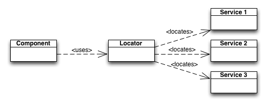

Java Naming and Directory Interface
Java Naming and Directory Interface
JNDI est une des technologies importante de JEE.
C'est une API qui permet d'accéder à des registres.
Ces registres peuvent contenir des objets de diverses natures.
Les serveurs d'applications y rangent les composants afin de les mettre à disposition des applications.
On y retrouve les services de base de données, de mail, des realms pour l'authentification...
Coté pattern
C'est une implémentation du pattern Service Locator.
Comme avec spring, cela permet d'obtenir un service sans savoir comment il a été créé.
Concrètement
Pour récupérer une référence sur un service du jndi
Context ctx = new InitialContext();
DataSource ds = (DataSource) ctx.lookup("jdbc/mabase");
Le container fournit une DataSource qu'il a préalablement instancié.
Sans changer notre code, on peut utiliser des bases de données différentes en dev et en prod.
La configuration est faite au niveau du serveur (conteneur d'application).
JNDI et Spring
L'injection de dépendances comme le pratique Spring est une alternative au service locator.
En plus d'ignorer la construction des collaborateurs, c'est le conteneur qui injecte la dépendance.
Comme jndi reste souvent un point de passage obligé en jee, Spring offre un pont entre son modèle d'injection et jndi.
Branche git
On crée la branche jndi à partir de la branche master.
$ git checkout master Switched to branch 'master' $ git checkout -b jndi Switched to a new branch 'jndi'
Le pool de connexion
Actuellement, la définition de notre pool de connexion est la suivante :
<bean id="dataSource" class="org.apache.commons.dbcp.BasicDataSource" destroy-method="close">
<property name="driverClassName" value="org.apache.derby.jdbc.EmbeddedDriver"/>
<property name="url" value="jdbc:derby:target/taskdb;create=true"/>
<property name="username" value=""/>
<property name="password" value=""/>
</bean>
Nous utilisons une base derby en mémoire.
Le but est de passer cette configuration sous jndi.
Au démarrage de l'application, tomcat remplit le registre jndi en lisant le fichier context.xml.
Par défaut, il va chercher le fichier context.xml dans le répertoire META-INF de l'application web.
Pour notre besoin, il faut donc définir le fircher src/main/webapp/META-INF/context.xml suivant.
<Context>
<Resource name="jdbc/taskdb"
auth="Container"
type="javax.sql.DataSource"
username=""
password=""
driverClassName="org.apache.derby.jdbc.EmbeddedDriver"
url="jdbc:derby:target/taskdb;create=true"
maxActive="10"
maxIdle="2"/>
</Context>
Et d'informer le plugin tomcat de sa présence
<plugin>
<groupId>org.apache.tomcat.maven</groupId>
<artifactId>tomcat7-maven-plugin</artifactId>
<version>2.1</version>
<configuration>
<path>/</path>
<contextFile>src/main/webapp/META-INF/context.xml</contextFile>
</configuration>
</plugin>
La configuration de derby dans le context est la même que celle du fichier spring.
Maintenant on modifie notre context spring afin d'utiliser jdbc/taskdb depuis le jndi.
<bean id="dataSource" class="org.springframework.jndi.JndiObjectFactoryBean"> <property name="jndiName" value="java:comp/env/jdbc/taskdb" /> </bean>
La configuration spring devient plus simple et indépendante de l'environnement.
Et encore une fois, nos composants n'ont pas été affectés par cette modification.
jndi namespace
On peut simplifier un peu la configuration spring.
Spring dispose d'un namespace jee afin de faciliter la récupération de références dans le jndi.
<beans ... xmlns:jee="http://www.springframework.org/schema/jee" xsi:schemaLocation=" ... http://www.springframework.org/schema/jee http://www.springframework.org/schema/jee/spring-jee-3.0.xsd">
On peut ensuite écrire.
<jee:jndi-lookup id="dataSource" jndi-name="java:comp/env/jdbc/taskdb" />
Déploiement dans tomcat
Avoir un fichier context.xml dans notre projet est pratique pour des tests.
Dans une installation tomcat existante, il est possible de mettre ces fichiers dans le $CATALINA_BASE.
Extrait de la documentation tomcat :
Context elements may be explicitly defined:
In the $CATALINA_BASE/conf/context.xml file: the Context element information will be loaded by all webapps.
In the $CATALINA_BASE/conf/[enginename]/[hostname]/context.xml.default file: the Context element information
will be loaded by all webapps of that host.
In individual files (with a ".xml" extension) in the $CATALINA_BASE/conf/[enginename]/[hostname]/ directory.
The name of the file (less the .xml extension) will be used as the context path.
Multi-level context paths may be defined using #, e.g. foo#bar.xml for a context path of /foo/bar.
The default web application may be defined by using a file called ROOT.xml.
Only if a context file does not exist for the application in the $CATALINA_BASE/conf/[enginename]/[hostname]/,
in an individual file at /META-INF/context.xml inside the application files.
If the web application is packaged as a WAR then /META-INF/context.xml will be copied to
$CATALINA_BASE/conf/[enginename]/[hostname]/ and renamed to match the application's context path.
Once this file exists, it will not be replaced if a new WAR with a newer /META-INF/context.xml is placed
in the host's appBase.
Inside a Host element in the main conf/server.xml.
La solution préférée est un fichier context dans $CATALINA_BASE/conf/[enginename]/[hostname]/.
Par défaut, enginename est "Catalina" et hostname est "localhost".
Par exemple, si notre application ROOT.war est déposée dans $CATALINA_BASE/webapps, tomcat va aller chercher un fichier $CATALINA_BASE/conf/Catalina/localhost/ROOT.xml.
Il est donc possible de configurer l'application au travers de ce fichier context.xml
META-INF/context.xml
Tomcat ne prendra pas en compte notre META-INF/context.xml si un fichier contexte est déjà présent dans $CATALINA_BASE.
Cependant, ce n'est pas très propre d'envoyer un fichier servant aux tests en production.
Nous allons donc utiliser maven afin de filter ce fichier au moment du build.
<plugin>
<groupId>org.apache.maven.plugins</groupId>
<artifactId>maven-war-plugin</artifactId>
<version>2.1.1</version>
<configuration>
<packagingExcludes>META-INF/context.xml</packagingExcludes>
</configuration>
</plugin>
Avec un mvn package, le fichier context.xml est donc exlu de notre war.
$ mvn clean ... $ mvn package ... $ jar tf target/todooz-1.0-SNAPSHOT.war META-INF/ META-INF/MANIFEST.MF ... META-INF/maven/fr.todooz/todooz/pom.xml META-INF/maven/fr.todooz/todooz/pom.properties
Nous application utilise jndi et notre war est davantage portable.
Les autres appservs
Chaque serveur d'application ou conteneur de servlet dispose de ses propres moyens de configuration.
Il faut donc regarder les moyens offerts par chaque serveur afin de configurer au mieux l'application.